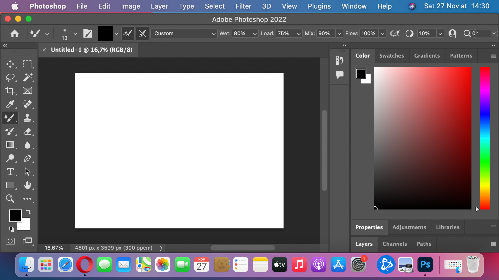

Чому Ви маєте обрати саме Photoshop?
Adobe Photoshop — це програма для редагування та обробки зображень, яка здобула широку популярність серед професіоналів та любителів фотографії. Існує безліч редакторів зображень на ринку, проте Adobe Photoshop видається найкращим вибором з багатьох причин.
-
По-перше, Adobe Photoshop має безліч потужних інструментів, які дозволяють робити неймовірні речі з фотографіями. Ви можете виправити помилки в експозиції, колірній корекції та ретуші, створити складні монтажі, додати ефекти та багато іншого. Ці можливості роблять Photoshop незамінним інструментом для професіоналів, які працюють у сфері дизайну, реклами, журналістики та інших творчих галузях.
-
По-друге, Adobe Photoshop має велику спільноту користувачів та розробників, що дозволяє отримувати підтримку та знаходити нові ідеї. На форумах та веб-сайтах знайдете безліч підручників, курсів та ресурсів, які допоможуть вам розвиватися та вдосконалювати свої навички. Багато великих компаній та професіоналів використовують Photoshop, тому ви можете легко знайти поради та рекомендації від досвідчених фахівців.
-
По-третє, Adobe Photoshop є інтегрованим у всесвітньо відомий пакет програм Adobe Creative Cloud. Це означає, що ви можете легко обмінюватися файлами з іншими програмами, такими як Adobe Illustrator, Adobe InDesign та Adobe Premiere Pro. Це дає вам більше можливостей для творчості та співпраці з іншими фахівцями.
Крім того, Adobe Photoshop постійно оновлюється та вдосконалюється. Команда розробників постійно працює над виправленням помилок, додаванням нових функцій та покращенням продуктивності. Це означає, що ви завжди матимете доступ до останніх технологій та можливостей, які допоможуть вам створити неперевершені зображення.
Окрім Adobe Photoshop, на ринку існує безліч альтернативних редакторів зображень. Хоча кожен редактор має свої переваги, Adobe Photoshop виступає лідером з багатьох причин.
Одним з найбільших конкурентів Photoshop є програма GIMP (GNU Image Manipulation Program) . GIMP є безкоштовним редактором з великим набором функцій, які дозволяють редагувати фотографії. Однак, порівняно з Adobe Photoshop, GIMP має меншу кількість інструментів та функцій. Photoshop надає більшу гнучкість та точність в роботі з зображеннями, що робить його перевагою для професіоналів, які потребують високої якості та деталізації.
Інший популярний редактор - Corel PaintShop Pro . Він пропонує подібний набір інструментів для редагування зображень, але відрізняється від Photoshop своєю інтерфейсом та організацією робочого простору. Photoshop має більш інтуїтивно зрозумілий та зручний інтерфейс, що дозволяє користувачам швидше впоратися з програмою та знайти потрібні інструменти.
Однак, Adobe Photoshop не є найбільш економічним варіантом. Вартість програми може бути високою для недосвідчених або непрофесійних користувачів. Зважаючи на це, існують безкоштовні альтернативи, такі як GIMP або онлайн-редактори, які можуть задовольнити потреби більш простих завдань.
Отже, обираючи між Adobe Photoshop та іншими редакторами, ви повинні врахувати свої потреби та рівень використання. Якщо ви професіонал, який працює у сфері дизайну або фотографії, Adobe Photoshop є найкращим вибором завдяки своїм потужним інструментам та можливостям. Але якщо ви шукаєте безкоштовний варіант або простий редактор для базових завдань, можливо, вам підійде GIMP або інші альтернативи.
Переваги та недоліки Adobe Photoshop
| Переваги Adobe Photoshop | Недоліки Adobe Photoshop |
|---|---|
| Широкий набір потужних інструментів для редагування та обробки зображень | Висока вартість програми |
| Велика спільнота користувачів та розробників, що надає підтримку та нові ідеї | Вимоглива система апаратного забезпечення |
| Інтеграція з Adobe Creative Cloud та іншими програмами Adobe | Великий обсяг функцій, який може бути складним для новачків |
| Постійні оновлення та вдосконалення програми | Потребує часу та зусиль для вивчення всіх можливостей |
| Висока якість та деталізація результуючих зображень | Є можливість перевантаження інтерфейсу через велику кількість функцій |